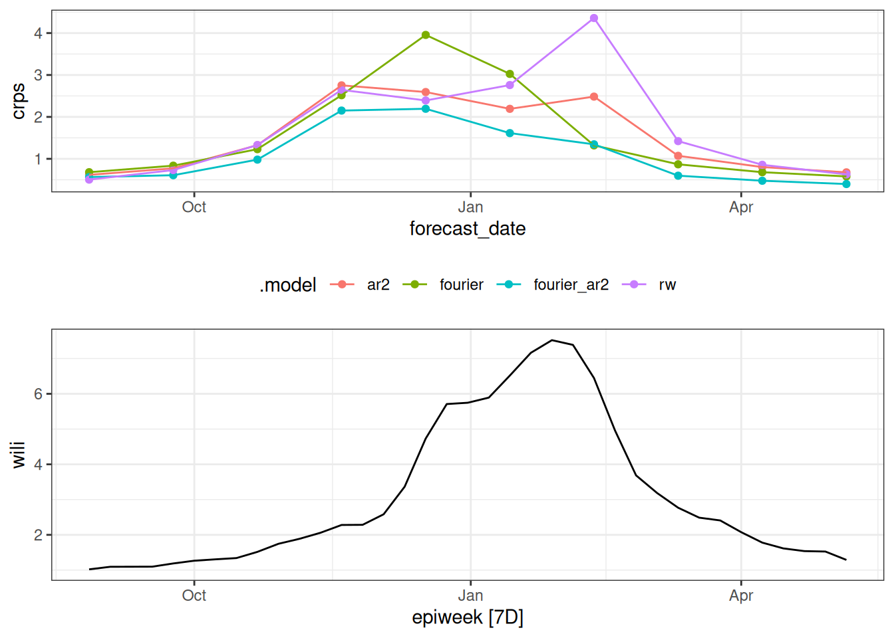

library("nfidd")
library("fable")
library("dplyr")
library("ggplot2")
library("epidatr")
theme_set(theme_bw())Forecast evaluation
Introduction
So far we have focused on building and visualisation simple forecasts. In this session you will get to know several ways of assessing different aspects of forecast performance. One of these approaches involves visualising forecasts in the context of eventually observed data. Another approach involves summarising performance quantitatively.
Slides
Objectives
The aim of this session is to introduce the concept of forecast evaluation from a qualitative and quantitative perspective.
Setup
Source file
The source file of this session is located at sessions/forecasting-evaluation.qmd.
Libraries used
In this session we will use the fable package for fitting and evaluating simple forecasting models, the dplyr package for data wrangling, the ggplot2 library for plotting and the epidatr package for accessing and downloading versions of epidemiological surveillance data from the Delphi EpiData API.
Tip
The best way to interact with the material is via the Visual Editor of RStudio.
Initialisation
We set a random seed for reproducibility. Setting this ensures that you should get exactly the same results on your computer as we do. This is not strictly necessary but will help us talk about the models.
set.seed(42) # for Jackie Robinson!Introduction to forecast evaluation
An important aspect of making forecasts is that we can later confront the forecasts with what really happened and use this to assess whether our forecast model makes good predictions, or which of multiple models work best in different situations. Different approaches may be appropriate for point forecasts and probabilistic forecasts. We will mostly focus on probabilistic forecasts, as we tend to think that providing probabilities can assist with more nuanced decision-making strategies.
What do we look for in a good probabilistic forecast?
Here are definitions of four desirable characteristics of good probabilistic forecasts:
- Calibration: The forecast should be well calibrated. This means that the forecasted probabilities should match the observed frequencies. For example, if the model predicts a 50% probability of an event occurring, then the event should occur approximately 50% of the time.
- Unbiasedness: The forecast should be unbiased. This means that the average forecasted value should be equal to the average observed value. It shouldn’t consistently over- or under-predict.
- Accuracy: The forecast should be accurate. This means that the forecasted values should be close to the observed values.
- Sharpness: As long as the other conditions are fulfilled we want prediction intervals to be as narrow as possible. Predicting that “anything can happen” might be correct but not very useful.
Note that sharpness is a property of the forecasts themselves, whereas calibration, unbiasedness, and accuracy are properties that emerge from comparing forecasts to observed data.
The forecasting paradigm
The general principle underlying forecast evaluation is to maximise sharpness subject to calibration (Gneiting and Raftery 2007). This means that statements about the future should be correct (calibration) and should aim to have narrow uncertainty (sharpness).
Challenges in forecast evaluation
In order to rigorously evaluate forecasts from a model, there will often be multiple dimensions at play. For example, you might run a forecasting experiment where you make forecasts …
- at multiple different times, based on the data available as of that time
- for multiple different locations
- for a number of different horizons into the future, (e.g. 1, 2 and 3 weeks into the future, or 1 through 40 days into the future.)
- with several or many different modeling approaches
In epidemiological forecasting, it is common to have projects where all four of these dimensions are in play.
Keeping track of these dimensions can be challenging. It also gives us a lot of model output data to work with when using scoring metrics. And raises challenges about doing statistically rigorous “testing” when trying to compare average errors across different dimensions.
Visual forecast evaluation
We will now generate some forecasts from one of the models we used earlier and evaluate them. However, to set us up for a more multi-dimensional experiment later in this session, we will start by loading in a bit more data than we did before.
flu_data <- epidatr::pub_fluview(regions = c("nat"),
epiweeks = epirange(200335, 201831)) |>
select(region, epiweek, wili) |>
as_tsibble(index = epiweek, key = region)data(flu_data)In the above code, we’ve pulled data from the 2003/2004 season through the entire 2017/2018 season (through week 31 of 2018, or 201831). Previously we had only pulled data up to the start of the 2017/2018 season.
Below, we will fit and forecast from the ARIMA model plus Fourier terms that we used in the last session. Note that we filter the data to start at the beginning of the season! This way, the model can’t see the data from later in the season when making the prediction (although we still could look at it).
## remember to define the transformation
fourth_root <- function(x) x^0.25
inv_fourth_root <- function(x) x^4
my_fourth_root <- new_transformation(fourth_root, inv_fourth_root)
## here is the model
fit_fourier_ar2 <- flu_data |>
filter(epiweek <= "2017-08-27") |>
model(
arima200_fourier = ARIMA(my_fourth_root(wili) ~ pdq(2,0,0) + fourier(period = "year", K=3))
)
## make the forecast
forecast_fourier_ar2 <- forecast(fit_fourier_ar2, h=40)
## plot the forecast against all of the data from the 2017/2018 season
forecast_fourier_ar2 |>
autoplot(flu_data |> filter(epiweek >= as.Date("2015-09-01"))) +
facet_wrap(~.model) +
labs(title = "WILI, US level",
y="% of visits")For the first time in the forecasting part of this course, we have confronted a model with the eventually observed data. And… well, what do you think?
Take 5 minutes
Look at the plot of data and forecasts carefully. Write down at least two observations about the forecasts and how well they seem to match the observed data. Share notes with your neighbor.
Solution
Once again, there isn’t an exact correct answer here, but here are a few observations.
- The model seems to do fairly well at the tails of the season.
- The model’s predictions for the epidemiologically important part (the peak!) is not very good - it’s much too low. The observed data are outside the 95% PI intervals for many weeks in a row.
But, maybe this isn’t the end of the world. It is a lot, afterall, to ask a model to predict several months into the future. (We don’t ask weather models to do that, generally. Or if we do, we probably don’t trust them that much.)
Quantitative forecast evaluation
We now summarise performance quantitatively by using scoring metrics. Whilst some of these metrics are more useful for comparing models, many can be also be useful for understanding the performance of a single model.
Tip
In this session, we’ll mostly be using “proper” scoring rules: these are scoring rules for probabilistic forecasts that make sure no model can get better scores than the true model, i.e. the model used to generate the data. Of course we usually don’t know this (as we don’t know the “true model” for real-world data) but proper scoring rules incentivise forecasters to make their best attempt at reproducing its behaviour. For a comprehensive (and fairly technical) text on proper scoring rules and their mathematical properties, we recommend the classic paper by Gneiting and Raftery (2007).
We start by computing some summary metrics across all of the forecasted horizons. We will initially compute three metrics (math details to follow):
- mean absolute error (MAE)
- root mean squared error (RMSE)
- continuous ranked probability score (CRPS)
In the code below, we ask fable to compute the accuracy metrics for the forecast object we created above by confronting it with the data in the flu_data object.
accuracy(forecast_fourier_ar2,
data = flu_data,
measures = list(mae = MAE, rmse = RMSE, crps = CRPS))# A tibble: 1 × 6
.model region .type mae rmse crps
<chr> <chr> <chr> <dbl> <dbl> <dbl>
1 arima200_fourier nat Test 0.947 1.62 1.54The results shown above are “Test” results, meaning they are metrics computed by comparing the forecasts to the eventually observed data. This is compared to “Training” results, which is the metrics computed “in-sample”, that is, to the data the model was allowed to see when fitting. You can see the training set results (for point-prediction metrics, at least) by passing the model fit object to the accuracy() function:
accuracy(fit_fourier_ar2, measures = list(mae = MAE, rmse = RMSE))# A tibble: 1 × 5
region .model .type mae rmse
<chr> <chr> <chr> <dbl> <dbl>
1 nat arima200_fourier Training 0.155 0.283
Tip
Because of the flavor of object-oriented programming used in fable, it can be tricky to figure out how to find the help pages for functions. For example, typing the standard ?accuracy does not get you to a useful page. Instead, you need to type ?accuracy.fbl_ts, since the forecast_fourier_ar2 is a an object with class "fbl_ts".
Take 5 minutes
Do the “Training” results show more or less accuracy than the “Test” results? Why? (Hint: You could use the “tip” above to figure out exactly what the “Training” results are measuring.)
Solution
The “Test” results are computed for one forecast made for 1 through 40 steps into the future and averaging across those.
According to the help page obtained by running ?accuracy.fbl_ts: “Accuracy measures can be computed directly from models as the one-step-ahead fitted residuals are available.” When we computed the “Training” set results, we just passed accuracy() the model object, so it is computing the metrics only on 1-step ahead forecasts, which generally will be more accurate since they are “closer” to observed data.
Mean absolute error
What is the Mean Absolute Error (MAE)?
For point forecasts (single value predictions), forecast accuracy is often measured using the Mean Absolute Error (MAE), which calculates the average (mean) absolute difference between predicted and observed values. Mathematically, this can be expressed simply as \[ MAE(\hat y, y) = \frac{1}{T} \sum_{t=1}^T |\hat y_t - y_t| \] where \(y_t\) is the observed value at time \(t\), \(\hat y_t\) is the point prediction, and \(T\) is the total number of predictions.
Key things to note about the MAE
- Small values are better.
- As it is an absolute scoring rule it can be difficult to use to compare forecasts where the observed values are on different scales. For example, if you are comparing forecasts for counts in location A, where the counts tend to be over ten thousand, to counts from location B, where counts tend to be under 100.
- The metric is on the scale of the data. The number MAE returns can be thought of as the average absolute distance between your prediction and the eventually observed value.
Mean squared error
What is the Root Mean Squared Error (RMSE)?
Another common point forecast accuracy measure is the Root Mean Squared Error (RMSE), which calculates the square root of the average (mean) squared difference between predicted and observed values. Mathematically, this can be expressed simply as \[ RMSE(\hat y, y) = \sqrt{\frac{1}{T} \sum_{t=1}^T (\hat y_t - y_t)^2} \] where \(y_t\) is the observed value at time \(t\), \(\hat y_t\) is the point prediction, and \(T\) is the total number of predictions.
Key things to note about the RMSE
- Small values are better.
- As it is an absolute scoring rule it can be difficult to use to compare forecasts where the observed values are on different scales (same as MAE).
- It tends to penalize forecasts that have large misses, because those distances will be squared and have an outsize impact on the mean.
- The metric is on the scale of the data.
Continuous ranked probability score
What is the Continuous Ranked Probability Score (CRPS)?
For probabilistic forecasts, where the forecast is a distribution rather than a single point estimate, we can use the Continuous Ranked Probability Score (CRPS). The CRPS is a proper scoring rule that generalises MAE to probabilistic forecasts. Note that for deterministic forecasts, CRPS reduces to MAE.
The CRPS can be thought about as the combination of two key aspects of forecasting: 1. The accuracy of the forecast in terms of how close the predicted values are to the observed value. 2. The confidence of the forecast in terms of the spread of the predicted values.
By balancing these two aspects, the CRPS provides a comprehensive measure of the quality of probabilistic forecasts.
Key things to note about the CRPS
- Small values are better
- As it is an absolute scoring rule it can be difficult to use to compare forecasts across scales.
- The metric is on the scale of the data. It can be thought of, in a heuristic kind of way, as a measure of distance between the predicted distribution and the observed value.
Mathematical Definition (optional)
The CRPS for a predictive distribution characterised by a cumulative distribution function \(F\) and observed value \(x\) is calculated as
\[ CRPS(F, y) = \int_{-\infty}^{+\infty} \left( F(x) - \mathbb{1} ({x \geq y}) \right)^2 dx. \]
For distributions with a finite first moment (a mean exists and it is finite), the CRPS can be expressed as:
\[ CRPS(F, y) = \mathbb{E}_{X \sim F}[|X - y|] - \frac{1}{2} \mathbb{E}_{X, X' \sim F}[|X - X'|] \]
where \(X\) and \(X'\) are independent random variables sampled from the distribution \(F\). To calculate this we simply replace \(X\) and \(X'\) by samples from our posterior distribution and sum over all possible combinations.
Looking at the scores by horizon
Whilst the metrics described above are very useful they can be difficult to interpret in isolation. For example, it is often useful to compare the CRPS of different models or to compare the CRPS of the same model under different conditions. Let’s compare the all of the metrics across different forecast horizons.
metrics_fourier_ar2 <- forecast_fourier_ar2 |>
mutate(h = row_number()) |>
accuracy(data = flu_data,
measures = list(mae = MAE, rmse = RMSE, crps = CRPS),
by = c(".model", "h"))
metrics_fourier_ar2# A tibble: 40 × 6
.model h .type mae rmse crps
<chr> <int> <chr> <dbl> <dbl> <dbl>
1 arima200_fourier 1 Test 0.0160 0.0160 0.192
2 arima200_fourier 2 Test 0.105 0.105 0.336
3 arima200_fourier 3 Test 0.200 0.200 0.468
4 arima200_fourier 4 Test 0.211 0.211 0.553
5 arima200_fourier 5 Test 0.237 0.237 0.633
6 arima200_fourier 6 Test 0.301 0.301 0.719
7 arima200_fourier 7 Test 0.365 0.365 0.799
8 arima200_fourier 8 Test 0.285 0.285 0.816
9 arima200_fourier 9 Test 0.147 0.147 0.834
10 arima200_fourier 10 Test 0.0963 0.0963 0.875
# ℹ 30 more rowsAbove you can see the top few rows of errors. And we could plot these metrics by horizon.
metrics_fourier_ar2 |>
tidyr::pivot_longer(
cols = c("mae", "rmse", "crps"),
names_to = "metric"
) |>
ggplot() +
geom_line(aes(x = h, y = value, color = metric)) +
facet_wrap(.~metric)
Take 5 minutes
How do the scores change with forecast horizon? How similar to or different from each other are the metrics? Which of the additional dimensions mentioned at the top of the lesson would you like to examine more closely for forecast accuracy?
Solution
- All of the metrics increase for horizons where true incidence is higher.
- All of the metrics follow nearly the same patterns, indicating that they are measuring very similar things about the forecasts.
- The forecast errors are strongly associated with the seasonality of the data.
Comparing three models at multiple time-points
Let’s run a real-life forecasting experiment now, comparing three different models. The experimental set-up will be:
- we will forecast from 3 different models
- each model will make forecasts at every fourth week throughout the 2017/2018 season.
- for each time a model makes a forecast, it will make it for 8 steps into the future.
Time-series cross-validation
This kind of experimental set-up is called “cross-validation”. Running an experiment in this way mimics what happens during real-time forecasting, when forecasts are made each week using available data. And because we are doing this on time-series data, it is referred to as “time-series cross-validation”. (If you are interested, you can read a little bit more about time-series cross-validation in the FPP3 book.)
Real-time forecasting realism
One thing about forecasting in real-time that is not replicated with the above experiment is that data in real-time are often incompletely reported (similar to data issues discussed in the first half of the course). In the experiment below, we are only subsetting the complete and final version of the data and assuming that this is what the model would have seen in real time. Knowing what we know about public health surveillance datasets, this is an optimistic assumption. To increase realism in an experiment like this, we could use epidatr to extract specific versions of data as they were available in real-time and forecast from those datasets.
The image below (generated with some code extracted from ChatGPT, with just a few very small tweaks) shows the experimental set-up. Each row of tiles corresponds to one “split” of the data, or one week where we are making a forecast. Blue tiles correspond to “training set” weeks (weeks of data the model is able train on). There are actually many more weeks of training data, but they are omitted so we can focus on the red weeks. Red tiles show the weeks that forecasts are made for.
The code below shows how to use the tsibble::stretch_tsibble() function to set up the cross-validation experiment. We looked at the dataset itself and saw that we wanted the first split to have 732 training weeks of data (that brings us to the start of the 2017 season), so that is the .init argument. We want to make forecasts every 4 weeks, so we set .step = 4. And, we want the resulting dataset to have a column called .split which will define each separate dataset.
flu_data_tscv <- flu_data |>
filter(epiweek <= as.Date("2018-06-01")) |>
tsibble::stretch_tsibble(
.init = 732,
.step = 4,
.id = ".split"
)
flu_data_tscv# A tsibble: 7,500 x 4 [7D]
# Key: .split, region [10]
region epiweek wili .split
<chr> <date> <dbl> <int>
1 nat 2003-08-24 0.490 1
2 nat 2003-08-31 0.736 1
3 nat 2003-09-07 0.582 1
4 nat 2003-09-14 0.654 1
5 nat 2003-09-21 0.750 1
6 nat 2003-09-28 0.884 1
7 nat 2003-10-05 1.03 1
8 nat 2003-10-12 1.28 1
9 nat 2003-10-19 1.33 1
10 nat 2003-10-26 1.77 1
# ℹ 7,490 more rowsThe resulting dataset (the top of which is shown above), now has many more rows than the initial dataset, since it basically is creating duplicate versions of the dataset, one for each unique value in the .split column.
For this experiment, let’s define four models:
- a random walk: this is what it sounds like. Each forecast takes a random walk from the last observed value. This is equivalent to an ARIMA(0,1,0) model.
- the AR(2) model that we fit earlier.
- a model that just has fourier terms and no ARIMA terms (you have to specify
pdq(0,0,0)otherwisefablewill insert some auto-selected terms in there for you). - a model that has both the AR(2) and fourier terms.
The following code generates the forecasts for each cross-validation split and for all horizons.
cv_forecasts <- flu_data_tscv |>
model(
rw = RW(my_fourth_root(wili)),
ar2 = ARIMA(my_fourth_root(wili) ~ pdq(2,0,0)),
fourier = ARIMA(my_fourth_root(wili) ~ pdq(0,0,0) + fourier(period = "year", K=3)),
fourier_ar2 = ARIMA(my_fourth_root(wili) ~ pdq(2,0,0) + fourier(period = "year", K=3))
) |>
forecast(h = 8) |>
## the following 3 lines of code ensure that there is a horizon variable in the forecast data
group_by(.split, .model) |>
mutate(h = row_number()) |>
ungroup() |>
## this ensures that the output is a table object
as_fable(response = "wili", distribution = wili)A common mistake in forecasting is to make forecasts and then just skip to looking at the metrics! Let’s pause here to look at a few of the forecasts.
cv_forecasts |>
filter(.split == 1) |>
tsibble::update_tsibble(key=c(.model, region)) |>
as_fable(response = "wili", distribution = wili) |>
autoplot(flu_data |> filter(epiweek >= as.Date("2016-09-01"))) +
facet_wrap(~.model) +
labs(title = "WILI, US level",
y="% of visits")cv_forecasts |>
filter(.split == 4) |>
tsibble::update_tsibble(key=c(.model, region)) |>
as_fable(response = "wili", distribution = wili) |>
autoplot(flu_data |> filter(epiweek >= as.Date("2016-09-01"))) +
facet_wrap(~.model) +
labs(title = "WILI, US level",
y="% of visits")
cv_forecasts |>
filter(.split == 6) |>
tsibble::update_tsibble(key=c(.model, region)) |>
as_fable(response = "wili", distribution = wili) |>
autoplot(flu_data |> filter(epiweek >= as.Date("2016-09-01"))) +
facet_wrap(~.model) +
labs(title = "WILI, US level",
y="% of visits")
cv_forecasts |>
filter(.split == 8) |>
tsibble::update_tsibble(key=c(.model, region)) |>
as_fable(response = "wili", distribution = wili) |>
autoplot(flu_data |> filter(epiweek >= as.Date("2016-09-01"))) +
facet_wrap(~.model) +
labs(title = "WILI, US level",
y="% of visits")
Take 5 minutes
Based on the above plots (and you could make a few more at different splits if you wanted to), which forecast model(s) do you expect to have the best forecast accuracy metrics? Why?
Evaluating the experimental forecasts
Let’s start by looking at an overall tabular summary of forecast accuracy.
cv_forecasts |>
accuracy(
flu_data,
measures = list(mae = MAE, rmse = RMSE, crps=CRPS)
) |>
arrange(crps)# A tibble: 4 × 6
.model region .type mae rmse crps
<chr> <chr> <chr> <dbl> <dbl> <dbl>
1 fourier_ar2 nat Test 0.595 1.00 1.09
2 ar2 nat Test 0.929 1.38 1.53
3 fourier nat Test 0.939 1.63 1.57
4 rw nat Test 1.30 1.85 1.76According to each metric, the fourier_ar2 model is the most accurate overall.
Often, results show differences across some of the experimental dimensions. Here, re-calculate the forecast errors and we plot the CRPS values as a function of horizon
cv_forecasts |>
accuracy(
flu_data,
by = c("h", ".model"),
measures = list(mae = MAE, rmse = RMSE, crps=CRPS)
) |>
ggplot(aes(x = h, y = crps, color = .model)) +
geom_point() +
geom_line()And here we compute the error based on the week the forecast was made and compare it to the observed data.
scores_to_plot <- cv_forecasts |>
mutate(forecast_date = epiweek - h*7L) |>
accuracy(
flu_data,
by = c("forecast_date", ".model"),
measures = list(mae = MAE, rmse = RMSE, crps=CRPS)
)
p1 <- scores_to_plot |>
ggplot(aes(x = forecast_date, y = crps, color = .model)) +
geom_point() +
geom_line() +
theme(legend.position = "bottom")
date_range <- range(scores_to_plot$forecast_date)
p2 <- flu_data |>
filter(epiweek >= date_range[1],
epiweek <= date_range[2]) |>
autoplot(wili)
gridExtra::grid.arrange(p1, p2)
Take 5 minutes
How do the CRPS scores change based on horizon? How do the CRPS scores change based on forecast date? What do these results this tell you about the models?
Solution
By horizon
- Notably, the accuracy declines (the CRPS increases) for all models across horizons except for the
fouriermodel. This is because the fourier model is predicting the same thing every week: seasonal average. The forecast does not align itself with recent data observations, it just predicts the historical seasonal average. - At horizons 1 and 2 the errors are similar for the
ar2,fourier_ar2andrwmodels, although therwmodel has moderately higher CRPS. - At larger horizons, there is a clearer distinction between the models, with the
fourierandfourier_ar2models lower than the others, andfourier_ar2showing the best accuracy of any of the models. - It is interesting to see that around 8 weeks the
fourier_ar2andfouriermodels converge in terms of accuracy. It seems that the auto-regressive components of the model seem to “add benefit” to the forecast accuracy for around 8 weeks. After that, a seasonal average is doing about the same.
By forecast date
By forecast_date, the models show similar forecast error for dates early and late in the season with the larger differences coming at the weeks with higher incidence.
Projecting a flat line from the data (what the random walk does, essentially) does not do well at the important and dynamic times of the season. The combination of factoring in some auto-regressive and seasonal dynamics appears to do the best over this experiment.
Going further
Challenge
- In which other ways could we summarise the performance of the forecasts?
- What other metrics could we use?
- Which aspects of forecast accuracy does CRPS address and how?
- There is no one-size-fits-all approach to forecast evaluation, often you will need to use a combination of metrics to understand the performance of your model and typically the metrics you use will depend on the context of the forecast. What attributes of the forecast are most important to you?
- One useful way to think about evaluating forecasts is to consider exploring the scores as a data analysis in its own right. For example, you could look at how the scores change over time, how they change with different forecast horizons, or how they change with different models. This can be a useful way to understand the strengths and weaknesses of your model. Explore some of these aspects using the scores from this session.
- Expand the experiment run in the session above to include forecasts made in every week, instead of every 4 weeks. Does this change the evaluation results?
Methods in practice
- There are many other metrics that can be used to evaluate forecasts. The documentation for the
{scoringutils}package has a good overview of these metrics and how to use them.
Wrap up
- Review what you’ve learned in this session with the learning objectives
Gneiting, Tilmann, and Adrian E Raftery. 2007. “Strictly Proper Scoring Rules, Prediction, and Estimation.” Journal of the American Statistical Association 102 (477): 359–78. https://doi.org/10.1198/016214506000001437.